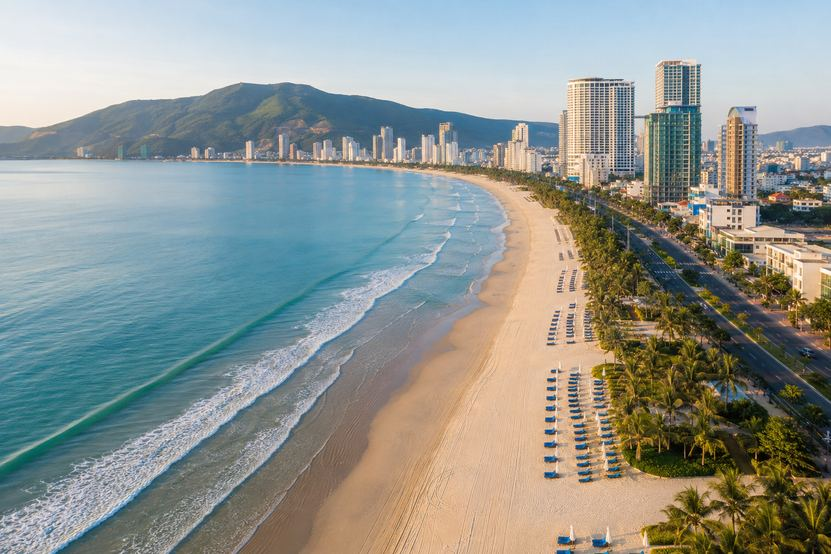
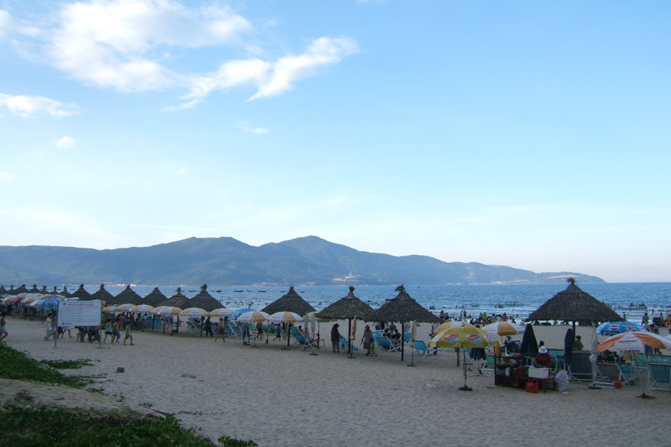

Living here
What Are the Best Beaches in Da Nang?
Five beaches, what each is best for, and the months the sea is calm.
Bài viết này hiện chỉ có bản tiếng Anh. Menu và phần điều hướng đã chuyển sang tiếng Việt. Alice nói tiếng Việt và tiếng Anh, nhắn tin cho cô nếu bạn cần giải thích bằng tiếng Việt.
Key takeaways
- The 5 best beaches in Da Nang are My Khe, Non Nuoc, the coves of the Son Tra peninsula, Nam O and An Bang near Hoi An.
- My Khe is the city beach: kilometres of free public sand, ten minutes from the centre, with lifeguard flags along the busy stretches.
- Swim from about April to August, when the sea is warm and calm. October and November bring storm swell, and some days swimming is not safe.
- Non Nuoc and the Son Tra coves are quieter. Nam O is for sunrise and gỏi cá, not swimming.
- An Bang, Hoi An's beach, lost much of its sand to erosion in 2025. Check the current state before you plan a day there.
What are the best beaches in Da Nang?
My Khe for every day, Non Nuoc for space, the Son Tra coves for shelter, Nam O for a fishing village at sunrise, and An Bang for Hoi An's beach bars. Da Nang has one long beach down its east side and a handful of smaller ones around it, and all five below are within about 45 minutes of the centre.
- My Khe: the city beach, free, wide and ten minutes from the centre. Best for daily swims.
- Non Nuoc: the quieter southern stretch below the Marble Mountains. Best for space.
- The Son Tra coves: small sheltered beaches on the peninsula. Best for calm water.
- Nam O: a fishing village on the rocks north of the city. Best for sunrise and seafood.
- An Bang: Hoi An's beach bar strip, recovering from erosion. Best for a long lunch.

| Beach | Where | Best for | Swimming |
|---|---|---|---|
| My Khe | East side of the city, 10 minutes | Daily swims, sunrise, families | Good from April to August |
| Non Nuoc | Ngu Hanh Son, 20 minutes | Space, resort beach, surfing in the cooler months | Good in calm months |
| Son Tra coves | The peninsula, 20 to 30 minutes | Sheltered water, a quiet day | Calmer than the open beach |
| Nam O | North of the city, 30 minutes | Sunrise, the fishing village, gỏi cá | Rocky, not for swimming |
| An Bang | Hoi An, 40 to 45 minutes | Beach bars and long lunches | Banned in eroded stretches |
Swim from April to August, between the flags. The sea in October and November is for watching.
1. My Khe: is it the best beach in Da Nang?
For living next to, yes. My Khe runs for kilometres along the east side of the city, from the Son Tra peninsula south towards Non Nuoc, and it is free and open every day. Locals swim at sunrise and after work, families come out in the late afternoon, and the beach road behind it has cafes, seafood restaurants and showers.

The busy stretches have lifeguards and flags. Swim between them, because rip currents are a real risk on this coast, and stay out on red flag days in the autumn storm season. The sea is warmest and calmest from about April to August.
My An and An Thuong sit right behind the middle of the beach and are the most walkable places to live near it. Our Son Tra and My An comparison covers the two ends of My Khe.
2. Non Nuoc: is it quieter than My Khe?
Yes. Non Nuoc is the southern end of the same coastline, below the Marble Mountains, where the high rises give way to resorts and open sand. There are fewer vendors and more space, and on a weekday you can walk a long way without a crowd.
The waves are bigger in the cooler months, which brings surfers, and the stretch between My Khe and Non Nuoc is where rip currents are most often reported. Swim near a lifeguard post or a resort beach. The villa communities of Ngu Hanh Son are a few minutes inland, and our guide to renting a house or villa in Da Nang covers them.
3. The Son Tra coves: where is the calmest water?
On the Son Tra peninsula, where small beaches sit between the headlands and the forest comes down to the sand. Bai Bac on the north side is one of them: a small, sheltered beach that sees far fewer people than My Khe. The coves are calmer than the open coast on most days.
They are a half day out rather than a daily swim, with few shops and steep roads. Combine one with the Lady Buddha at Linh Ung pagoda, and bring water and food. Our guide to the top 5 places to visit in Da Nang has the rest of the peninsula.
4. Nam O: what is there besides the beach?
A fishing village and one of the city's best dishes. Nam O sits on the rocky shore at the northern edge of Da Nang, where the coastal road turns towards the Hai Van Pass. Come at sunrise, when the fishing boats come in, and walk the rocks rather than swim, since the shore is stony.
Stay for gỏi cá Nam Ô, raw fish cured with lime and dressed with roasted rice powder, herbs and a sauce made from the fish. Our guide to Da Nang food explains why it is worth the drive.
5. An Bang: can you still swim at Hoi An's beach?
In parts, and you should check first. An Bang is the beach closest to Hoi An's old town, known for its relaxed beach bars and seafood restaurants. Since Hoi An joined Da Nang in July 2025, it is part of the same city, about 40 to 45 minutes from the centre.
It has also been badly hit by erosion. Storms and high seas in late 2025 ate into nearly 8 km of coast between Cua Dai and An Bang, toppled beach bars, and led the authorities to ban swimming in the eroded stretches. In April 2026 the city ordered emergency work on embankments and the Hoi An shoreline, with breakwaters and new sand, and aimed to finish by September 2026. Ask locally what the beach looks like now before you plan a day around it. Our Da Nang or Hoi An guide covers the coast there for anyone thinking of living nearby.
When is the best time to swim in Da Nang?
From about April to August. Days run from about 22 to 35°C, the sea is warm, and the water is at its calmest. September is a mix of sunny days and the first storms. October and November are the rainy season, when storm swell makes the sea rough and some days unsafe, and December to February are cool, from about 18 to 26°C, with fewer people in the water.
- Swim early or late. The sun is fierce from late morning to mid afternoon, which is why locals swim at sunrise and after 4pm.
- Swim between the flags. Rip currents pull swimmers out on this coast every year.
- Watch for red flags in autumn and after storms, and stay out when they fly.
Our guide to the weather month by month has the full year.
Where should you live to be near the beach?
My An and An Thuong, if you want to walk to the sand in five minutes and to cafes in two. Son Tra suits you if you want quieter streets at the north end of the beach, and Ngu Hanh Son if you want a house or villa near Non Nuoc. The My Khe beachfront itself is mostly high rise apartments with the sea outside the window.
Our guide to where to live in Da Nang compares the five main areas on rent, noise and flood risk.
Frequently asked questions
What are the best beaches in Da Nang?
My Khe, the long city beach on the east side, Non Nuoc below the Marble Mountains, the small coves of the Son Tra peninsula such as Bai Bac, Nam O at the northern edge of the city, and An Bang near Hoi An's old town.
Is My Khe beach safe for swimming?
Yes, between the flags and in calm weather. The busy stretches have lifeguards. Rip currents are a real risk on this coast, so swim near a lifeguard post and stay out on red flag days, especially in October and November.
When is the best time to swim in Da Nang?
From about April to August, when the sea is warm and calm and days run from about 22 to 35°C. October and November are the rainy season, with storm swell and rough water, and December to February are cool.
Is An Bang beach still open?
Parts of it. Erosion in late 2025 ate into nearly 8 km of coast between Cua Dai and An Bang, and swimming was banned in the eroded stretches. Emergency shoreline work was due to finish in September 2026, so check the current state before you go.
Can you swim at Nam O beach?
Not really. Nam O's shore is rocky, and the beach is better for a sunrise walk, watching the fishing boats come in and eating gỏi cá Nam Ô, the village's raw fish salad.
Where should I live in Da Nang to be near the beach?
My An and An Thuong, behind the middle of My Khe, where the sand is a five minute walk and the area is full of cafes. Son Tra is quieter at the north end, and Ngu Hanh Son has houses and villas near Non Nuoc.